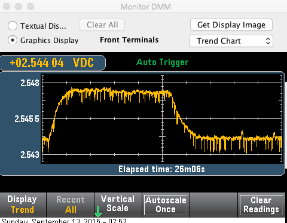

Im playing with an arduino and one CT and AC - AC on analog pins.
The circuits for CT an AC-AC are powered from 3.3V.
The board (arduino) from 5V (USB).
Can I use a precise voltage reference ? (I have one with 4.096V)
Do I need to change anything ? (arduino AREF is set to external and has the VREF connected to it).
And code changes needed for calculations to the voltage read by the analog pins ?
Re: Analog voltage reference with a precise voltage reference.
You will be using only 80% of the input range, unless you shift the bias voltage to 2.048 V by changing resistors. You need to tell emonLib that your reference is 4.096 V, and the starting point for the digital filters is no longer half way (assuming you don't change the bias resistors). You'll need to modify your copy of emonLib to achieve this. If you look at emonlib.cpp, it should be fairly obvious what you need to do.
I've never tried that configuration, so I don't know what else you might need to do.
Re: Analog voltage reference with a precise voltage reference.
So if I shift the bias voltage to 2.048V and set the SupplyVoltage to 4.096V it should work ?
Re: Analog voltage reference with a precise voltage reference.
I can't see a reason why not. You'll probably want to run one of Robin's utility sketches to check that the input is biased to the right place and the waveforms look right, and of course you can if you wish adjust the voltage divider/burden resistor to take advantage of the 25% or so extra input swing you have.
Re: Analog voltage reference with a precise voltage reference.
Thx, and where do I find the sketches ?
Had no luck finding them.
EDIT: found them! Which one should I use ?
Re: Analog voltage reference with a precise voltage reference.
Which one should I use ?
This one: http://openenergymonitor.org/emon/sites/default/files/rawSamplesTool.ino_.zip
or
this one: http://openenergymonitor.org/emon/sites/default/files/RawSamplesTool_4ss_2.ino_.zip
Re: Analog voltage reference with a precise voltage reference.
Do I need to change anything ? (arduino AREF is set to external and has the VREF connected to it).
Just be aware that EnergyMonitor::readVcc() unconditionally sets it back to AVCC, not by calling analogReference() but by directly banging on ADMUX. The library and those raw sample tools call readVcc() and if you run that code unmodified on your setup you will destroy your processor.
I think for your hardware you want a modified readVcc() that unconditionally returns 4096 and NEVER writes to ADMUX.
Re: Analog voltage reference with a precise voltage reference.
dBC:
Do you have any information about the stability of the internal reference? We know the initial value is imprecise (1.0 < 1.1 < 1.2 V), but what effect does supply voltage, ageing and temperature have? I can't find any specific information for the 328P, only generic data on band-gap devices generally.
Re: Analog voltage reference with a precise voltage reference.
I've only ever used the 2.56V internal reference available on some AVR devices (including the 2560 used for the measurements below), and like you I've not been able to find any specific data. My 3.3V Vcc is stable down to the mV, so of the parameters you listed, temperature is the only one I've studied in detail, and it's not that great.
The attached plot shows the 2.56V bandgap over a 12C temperature range. It varies by 4.569mV or about 0.18%, or about 1.8 AtoD units, so it's barely stable enough for a 10-bit AtoD. Since moving to 14-bit AtoD conversions (courtesy of oversampling) I've also moved to an external Vref, which is more temperature stable (approx 30ppm/degC, or about 5x better than the measured internal bandgap performance).

Re: Analog voltage reference with a precise voltage reference.
That's useful knowledge, thanks. As you say, not that great but a lot better than the ±10% of the initial value. I've always been a little dubious over the use of the nominal value of the Vcc supply as the basis of the calculations, because of the effect of device tolerance, temperature, load and supply variations on the true value, but the data seemingly doesn't exist to prove the question one way or the other.
Re: Analog voltage reference with a precise voltage reference.
Yes, I guess it comes down to which you think is the more stable: Vcc, or the 1.1V bandgap used by readVcc() in order to "measure" Vcc.
Re: Analog voltage reference with a precise voltage reference.
what effect does supply voltage, ageing and temperature have?
Here's two plots (one for the 328 the other for the 328P) that show Bandgap vs Vcc at three different temperatures for the 328, and four different temps for the 328P.
Taken from the Atmel datasheet:
www.atmel.com/images/Atmel-8271-8-bit-AVR-Microcontroller-ATmega48A-48PA-88A-88PA-168A-168PA-328-328P_datasheet_Complete.pdf pages 485 and 510.
Couldn't find any data on ageing. :-(
Re: Analog voltage reference with a precise voltage reference.
A good find, Bill, thanks. I can do some sums with that.